Repair Procedures
Replacement
Door Scuff Trim Replacement
CAUTION:
- Put on gloves to protect your hands.
- Use a plastic panel removal tool to remove interior trim pieces to protect from marring the surface.
- Take care not to bend or scratch the trim and panels.
1. Using a screwdriver or remover, remove the front door scuff trim (A).
[Front]
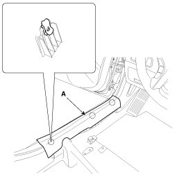
2. Remove the rear seat cushion.
3. After loosening the mounting screw, then remove rear door scuff trim (A).
[Rear]
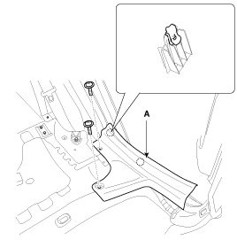
4. Installation is the reverse of removal.
NOTE:
- Replace any damaged clips.
Front Pillar Trim Replacement
NOTE:
- Put on gloves to protect your hands.
- Use a plastic panel removal tool to remove interior trim pieces to protect from marring the surface.
- Take care not to bend or scratch the trim and panels.
1. Using a screwdriver or remover, remove the front pillar trim (A).
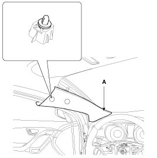
2. Installation is the reverse of removal.
NOTE:
- Replace any damaged clips.
Cowl Side Trim Replacement
CAUTION:
- Put on gloves to protect your hands.
- Use a plastic panel removal tool to remove interior trim pieces to protect from marring the surface.
- Take care not to bend or scratch the trim and panels.
1. Remove the front door scuff trim.
2. Remove the hood latch release handle.
3. Detach the clips, then remove the cowl side trim (A).
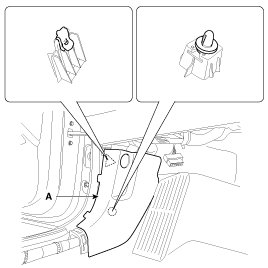
4. Installation is the reverse of removal.
NOTE:
- Replace any damaged clips.
Center Pillar Trim Replacement
CAUTION:
- Put on gloves to protect your hands.
- Use a plastic panel removal tool to remove interior trim pieces to protect from marring the surface.
- Take care not to bend or scratch the trim and panels.
1. Remove the front door scuff trim and rear door scuff trim.
2. To remove the seat belt anchor pretensioner (C), keep on pushing the lock pins (A) as arrow direction.
And then remove the seat belt after pushing the lock pin (B).
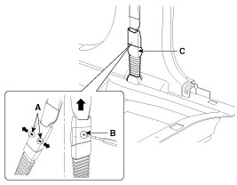
3. Remove the center pillar lower trim (A).
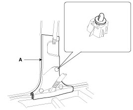
4. After loosening the mounting bolt, then remove the center pillar upper trim (A).
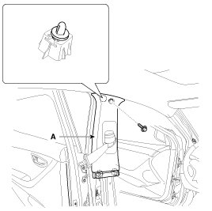
5. Installation is the reverse of removal.
NOTE:
- Replace any damaged clips.
Rear Pillar Trim Replacement
CAUTION:
- Put on gloves to protect your hands.
- Use a plastic panel removal tool to remove interior trim pieces to protect from marring the surface.
- Take care not to bend or scratch the trim and panels.
1. Using a screwdriver or remover, remove the rear pillar trim (A).
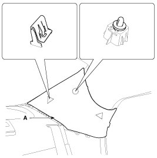
2. Installation is the reverse of removal.
NOTE:
- Replace any damaged clips.
Package Tray Trim Replacement
CAUTION:
- Put on gloves to protect your hands.
- Use a plastic panel removal tool to remove interior trim pieces to protect from marring the surface.
- Take care not to bend or scratch the trim and panels.
1. Remove the rear seat assembly.
2. Remove the rear door scuff trim.
3. Using a screwdriver or remover, remove the rear pillar trim (A).
4. After loosening the mounting screws and clips, then remove the luggage partition trim (A).
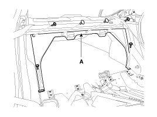
5. Using a screwdriver or remover, remove the rear wheel house trim (A).
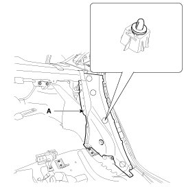
6. Disconnect the connector (A).
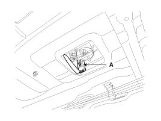
7. Using a screwdriver or remover, remove the package tray trim (A).
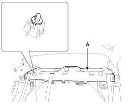
8. Installation is the reverse of removal.
NOTE:
- Replace any damaged clips.
- Make sure the connector is connected properly.